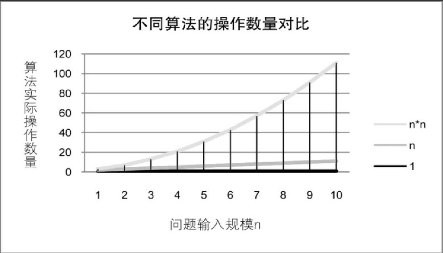
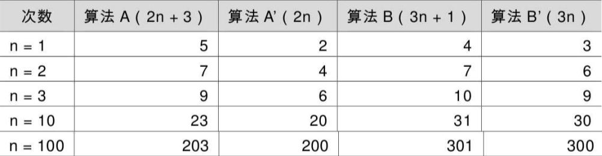
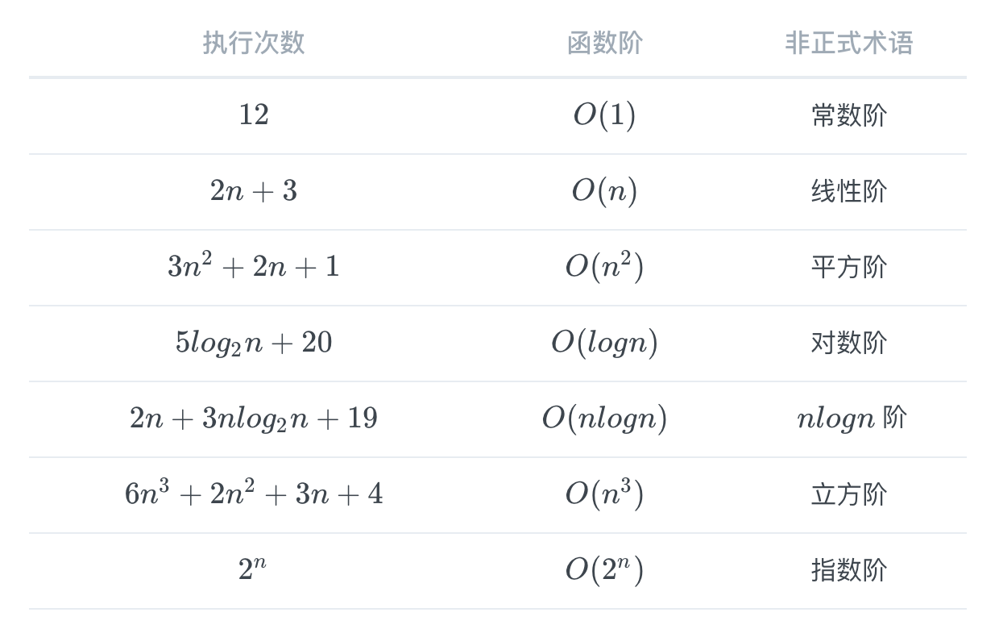

算法是解决特定问题求解步骤的描述，在计算机中表现为指令的有限序列，并且每条指令表示一个或多个操作。
这里谈到的算法只是为了更好的帮助理解数据结构，并不会详细谈及算法的方方面面。
算法是解决特定问题求解步骤的描述，在计算机中表现为指令的有限序列，并且每条指令表示一个或多个操作。
为了解决某个或某类问题，需要把指令表示成一定的操作序列，操作序列包括一组操作，每一个操作都完成特定的功能，这就是算法了。
算法具有五个基本特性：输入、输出、有穷性、确定性和可行性。
算法具有零个或多个输入，至少有一个或多个输出。 算法是一定需要输出的。输出的形式可以是打印输出，也可以是返回一个或多个值等。
有穷性指算法在执行有限的步骤之后，自动结束而不会出现无限循环，并且每一个步骤在可接受的时间内完成。
这里有穷的概念并不是纯数学意义的，而是在实际应用当中合理的、可以接受的“有边界”。如果一个算法需要运行二十年，一定会结束，但这个算法也没什么很大的意义了（绝大部分情况下）。
算法的每一步骤都具有确定的含义，不会出现二义性。 算法在一定条件下，只有一条执行路径，相同的输入只能有唯一的输出结果。算法的每个步骤被精确定义而无歧义。
算法的每一步都必须是可行的，都能够通过执行有限次数完成。
正确性：算法的正确性是指算法至少应该具有输入、输出和加工处理无歧义性、能正确反映问题的需求、能够得到问题的正确答案。
算法的“正确”大体分为四个层次：
层次 1 要求最低，但是仅仅没有语法错误实在谈不上是好算法。层次 4 是最困难的，几乎不可能逐一验证所有的输入都得到正确的结果。
因此算法的正确性在大部分情况下都不可能用程序来证明，而是用数学方法证明的。证明一个复杂算法在所有层次上都是正确的，代价非常昂贵。一般情况下把层次 3 作为一个算法是否正确的标准。
可读性：算法设计的另一目的是为了便于阅读、理解和交流。
可读性高有助于人们理解算法，晦涩难懂的算法往往隐含错误，不易被发现，并且难于调试和修改。
一个好的算法还应该能对输入数据不合法的情况做合适的处理。比如输入的时间或者距离不应该是负数等。
健壮性：当输入数据不合法时，算法也能做出相关处理，而不是产生异常或莫名其妙的结果。
时间效率高：时间效率指的是算法的执行时间，对于同一个问题，如果有多个算法能够解决，执行时间短的算法效率高，执行时间长的效率低。
存储量低 ：存储量需求指的是算法在执行过程中需要的最大存储空间，主要指算法程序运行时所占用的内存或外部硬盘存储空间。
设计算法应该尽量满足时间效率高和存储量低的需求。
综上，好的算法，应该具有正确性、可读性、健壮性、高效率和低存储量的特征。
事后统计方法：这种方法主要是通过设计好的测试程序和数据，利用计算机计时器对不同算法编制的程序的运行时间进行比较，从而确定算法效率的高低。
但这种方法有很大的缺陷：
故不予采纳事后统计方法。
事前分析估算方法：在计算机程序编制前，依据统计方法对算法进行估算。
一个用高级程序语言编写的程序在计算机上运行时所消耗的时间取决于下列因素：
第 1 条是算法好坏的根本，第 2 条要由软件来支持，第 4 条要看硬件性能。抛开与计算机硬件、软件有关的因素，一个程序的运行时间，依赖于算法的好坏和问题的输入规模。 所谓问题输入规模是指输入量的多少。
测定运行时间最可靠的方法就是计算对运行时间有消耗的基本操作的执行次数。运行时间与这个计数成正比。
我们不关心编写程序所用的程序设计语言是什么。也不关心这些程序将跑在什么样的计算机中，我们只关心它所实现的算法。这样，不计那些循环索引的递增和循环终止条件、变量生命、打印结果等操作，最终，在分析程序的运行时间时，最重要的是把程序看成是独立于程序设计语言的算法或一系列步骤。
我们在分析一个算法的运行时间时，重要的是把基本操作的数量与输入规模关联起来，即基本操作的数量必须表示成输入规模的函数。如下：

我们可以这样认为，随着 n 值的越来越大，它们在时间效率上的差异也就越来越大。

对于上表格中的两种算法，当 时，算法 A 效率不如算法 B（次数比算法 B 要多一次）。而 时，两者效率相同；当 时，算法 A 就开始优于算法 B 了，随着 的增加，算法 A 比算法 B 越来越好了（执行次数比 B 要少）。于是，我们可以得出结论，算法 A 总体上要好过算法 B。
函数的渐近增长： 给定两个函数 和 ，如果存在一个整数 ，使得对于所有的 ， 总是比 大，那么说 的增长渐近快于 。
从上述的表格还可以看出，随着 的增大，后面的 +3 还是 -1 其实是不影响最终的算法变化的，所以，我们可以忽略这些加法常数。
除此之外，我们通过其它相关的例子还可以发现：
判断一个算法的效率时，函数中的常数和其他次要项常可以忽略，而更应该关注主项（最高阶项）的阶数。
在进行算法分析时，语句总的执行次数 是关于问题规模 的函数，进而分析 随 的变化情况并确定 的数量级。算法的时间复杂度，也就是算法的时间量度，记作：。表示随问题规模 的增大，算法执行时间的增长率和 的增长率相同，称作算法的渐近时间复杂度，简称为时间复杂度。其中 是问题规模 的某个函数。
用大写来体现算法时间复杂度的记法，称之为大记法。一般情况下，随着的增大，增长最慢的算法为最优算法。
一般情况下，随着 的增大， 增长最慢的算法为最优算法。
推导大O阶：
得到的结果就是大 O 阶。
执行时间恒定的算法，称之为具有 的时间复杂度，又叫常数阶。
不管这个常数是多少，都记作 ，而不能是 、 等其他任何数字。
对于分支结构而言，无论是真，还是假，执行的次数都是恒定的，不会随着 的变大而发生变化，所以单纯的分支结构（不包含在循环结构中），其时间复杂度也是 。
线性阶的循环结构会复杂很多。要确定某个算法的阶次，需要确定某个特定语句或某个语句集运行的次数。
要分析算法的复杂度，关键就是要分析循环结构的运行情况。
int i; for (i = 0; i < n; i++) { /* 时间复杂度为O(1)的程序步骤序列 */ }
循环的时间复杂度为 ，因为循环体中的代码须要执行 次。
int count = 1; while (count < n) { count = count * 2; /* 时间复杂度为O(1)的程序步骤序列 */ }
由于每次 count 乘以 2 之后，就距离 更近了。也就是说，有多少个 2 相乘后大于 ，则会退出循环。由 得到 。所以这个循环的时间复杂度为 。
int i, j; for (i = 0; i < n; i++) { for (j = 0; j < n; j++) { /* 时间复杂度为O(1)的程序步骤序列 */ } }
的时间复杂度为。
循环的时间复杂度等于循环体的复杂度乘以该循环运行的次数。
int i, j; for (i = 0; i < n; i++) { /* 注意j = i 而不是0 */ for (j = i; j < n; j++) { /* 时间复杂度为O(1)的程序步骤序列 */ } }
总的执行次数为：
用我们推导大 O 阶的方法:
从这个例子，我们可以得出一个结论，其实理解大 O 推导不算难，难的是对数列的一些相关运算，这更多的是考察你的数学知识和能力。
n++; /* 执行次数为1 */ function(n); /* 执行次数为n */ int i, j; for (i = 0; i < n; i++) /* 执行次数为n2 */ { function (i); } for (i = 0; i < n; i++) /* 执行次数为n(n + 1)/2 */ { for (j = i; j < n; j++) { /* 时间复杂度为O(1)的程序步骤序列 */ } } void function(int count) { int j; for (j = count; j < n; j++) { /* 时间复杂度为 O(1) 的程序步骤序列 */ } }
执行次数 ，根据推导大 O 阶的方法，最终这段代码的时间复杂度也是 。

常用的时间复杂度所耗费的时间从小到大依次是：
像 ，过大的 都会使得结果变得不现实。同样指数阶 和阶乘阶 等除非是很小的 值，否则哪怕 只是 100，都是噩梦般的运行时间。
所以这种不切实际的算法时间复杂度，一般我们都不去讨论它。
最坏情况运行时间是一种保证，那就是运行时间将不会再坏了。在应用中，这是一种最重要的需求。通常，除非特别指定，运行时间都是最坏情况的运行时间。
而平均运行时间也就是从概率的角度看，这个数字在每一个位置的可能性是相同的，所以平均的查找时间为 次后发现这个目标元素。
平均运行时间是所有情况中最有意义的，因为它是期望的运行时间。 平均运行时间很难通过分析得到，一般都是通过运行一定数量的实验数据后估算出来的。
对算法的分析，一种方法是计算所有情况的平均值，这种时间复杂度的计算方法称为平均时间复杂度。另一种方法是计算最坏情况下的时间复杂度，这种方法称为最坏时间复杂度。一般在没有特殊说明的情况下，都是指最坏时间复杂度。
我们在写代码时，完全可以用空间来换取时间。
算法的空间复杂度通过计算算法所需的存储空间实现，算法空间复杂度的计算公式记作：，其中， 为问题的规模， 为语句关于 所占存储空间的函数。
一般情况下，一个程序在机器上执行时，除了需要存储程序本身的指令、常数、变量和输入数据外，还需要存储对数据操作的存储单元。若输入数据所占空间只取决于问题本身，和算法无关，这样只需要分析该算法在实现时所需的辅助单元即可。
若算法执行时所需的辅助空间相对于输入数据量而言是个常数，则称此算法为原地工作，空间复杂度为 。
通常，我们都使用“时间复杂度”来指运行时间的需求，使用“空间复杂度”指空间需求。当不用限定词地使用“复杂度”时，通常都是指时间复杂度。